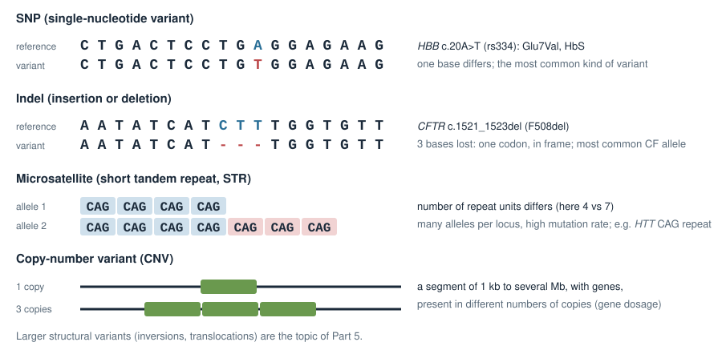
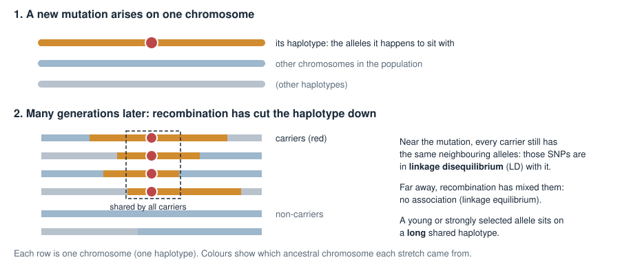
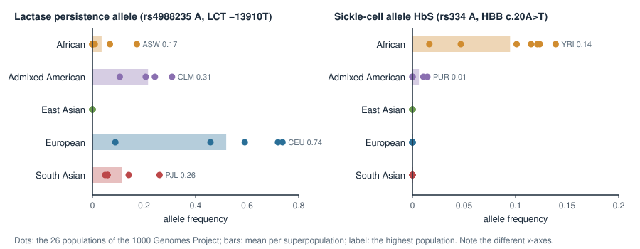
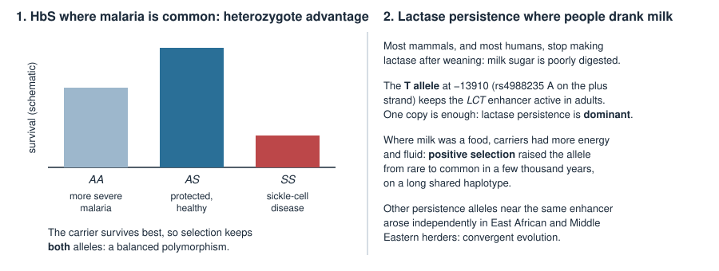

Part 4: Genome analysis. SNPs, indels, repeats and copy-number variants; haplotypes; and why allele frequencies differ between populations
Basic and molecular genetics (5MO104)
About this lecture
The reference genome from the last unit is one genome. No living person has exactly that sequence. This lecture is about the differences: what kinds there are, how we find them in thousands of people, and why some alleles are common in one part of the world and rare in another.
Kinds of variant: SNPs, indels, microsatellites (STRs) and copy-number variants (CNVs).
Naming a variant: rs numbers, HGVS names, and the strand problem.
Haplotypes and linkage disequilibrium (LD).
Genotyping by arrays vs sequencing; the big databases: dbSNP, 1000 Genomes, gnomAD.
Population differences, with two case stories: lactase persistence and the sickle-cell allele and malaria.
Personal genomics: what a consumer genome test can and cannot tell you.
Book: Hartwell, Genetics: From Genes to Genomes, chapter on variation between individual genomes.
How different are two genomes?
Comparison
Differences
Two unrelated people
about 1 SNP per 1,000 bp, so a few million SNPs
One person vs the reference genome (1000 Genomes)
4.1–5.0 million sites: mostly SNPs, plus indels and structural variants
Variants in a typical genome that change a protein
about 10,000 amino-acid changes; on the order of 100 that break a gene (loss of function)
Human vs chimpanzee
about 1.2% of aligned bases (SNPs only)
Most variants are neutral: in introns or between genes, or silent. A few change a protein (like HbS) or gene regulation (like lactase persistence).
Kinds of variant

Type
Size
Mutation rate
Example
SNP (SNV)
1 bp
~10−8 per bp per generation
HbS, rs334
Indel
1–50 bp
lower than SNPs
CFTR F508del
STR (microsatellite)
1–6 bp unit, repeated
10−3–10−4 per locus
HTT CAG repeat; forensic markers
CNV
1 kb to Mb
AMY1 (salivary amylase) copy number
Naming a variant
The sickle-cell variant has several names, and you need to recognise them all:
Name
Meaning
rs334
dbSNP reference SNP number: a stable ID for the position, whatever the alleles
NC_000011.10:g.5227002T>A
genomic: chromosome 11 (GRCh38), position 5,227,002, T → A on the plus strand
NM_000518.5:c.20A>T
coding: position 20 of the HBB coding sequence, A → T on the gene’s strand
p.Glu7Val (traditionally Glu6Val)
protein: glutamate 7 → valine (counting the start Met)
HBB lies on the minus strand, so the plus-strand T>A and the coding A>T are the same change. Databases such as gnomAD and Ensembl list alleles on the plus strand; check the strand before you compare.
Haplotypes and linkage disequilibrium

A haplotype is the set of alleles on one chromosome. Nearby alleles are inherited together unless a crossover separates them.
Linkage disequilibrium (LD): alleles at nearby sites are associated in a population. It decays with distance and with time.
Why LD matters
Tag SNPs. Within an LD block, one SNP predicts its neighbours. A genotyping array with ~0.5–1 million SNPs captures much of the common variation of a genome.
Association studies (GWAS). A SNP associated with a trait may not be the cause itself; it may be in LD with the causal variant nearby. (Complex traits, Part 7.)
Mapping, old and new. Linkage (Part 2) uses crossovers in families, a few per chromosome per meiosis, so it locates genes to a few Mb. LD uses the crossovers of thousands of generations, so it narrows the region down to kb.
Ancestry. LD and haplotypes differ between populations; the longest LD blocks are in populations that went through bottlenecks.
Genotyping: arrays vs sequencing
SNP array
Exome sequencing
Whole-genome sequencing
What is read
~0.5–2 million known SNPs
the ~1–2% of the genome that codes for protein
(almost) all 3.1 Gb
Finds new or rare variants
no
yes, in exons
yes, everywhere
Indels, STRs, CNVs
poorly
some
yes (best with long reads)
Typical use
consumer tests, GWAS, ancestry
rare disease diagnosis
research, clinical genomics, gnomAD
Cost
lowest
middle
highest (falling)
An array can only find what it was designed to look for. A disease variant that is rare or private to one family needs sequencing.
A variant’s population frequency is key evidence in diagnostics: an allele that is common in healthy people cannot cause a rare, severe, dominant disease.
Allele frequencies differ between populations

About 85–90% of human genetic variation is found within any population; only a small part separates populations.
But some alleles differ sharply. The causes: genetic drift (chance, strongest in small populations), migration, and natural selection.
Lactase persistence
Population (1000 Genomes)
rs4988235 A (= LCT −13910T)
Expected lactase persistent (1 − (1 − q)2)
Utah, N. and W. European ancestry (CEU)
0.74
0.93
British (GBR)
0.72
0.92
Finnish (FIN)
0.59
0.83
Toscani, Italy (TSI)
0.09
0.17
Yoruba, Nigeria (YRI); Han Chinese (CHB)
0
0
The variant lies in an intron of the neighbouring gene MCM6, about 14 kb upstream of LCT, in an enhancer that keeps LCT on in adults. A regulatory variant, not a protein change.
Persistence is dominant: one T allele is enough, so phenotype frequency is 1 − (1 − q)2 (assuming Hardy–Weinberg proportions, Part 7).
Herding populations in East Africa and the Middle East have other persistence alleles in the same enhancer.
Sickle cell and malaria

The HbS allele (rs334 A) reaches 0.10–0.14 in the West and East African 1000 Genomes samples (YRI, ESN, MSL, GWD, LWK), is lower in the African-diaspora samples (ACB, ASW) and is absent from the European and East Asian samples.
Variants and families: back to pedigrees
Population frequencies feed directly into the risk calculations of Part 1:
Carrier probability of a partner. For a recessive disease with allele frequency q, a random partner is a carrier with probability about 2q: for HbS in YRI (q = 0.14), 2 × 0.14 × 0.86 ≈ 0.24.
Risk for a child of a known carrier and a random partner: ¼ × 0.24 = 0.06.
Interpreting a new variant in a family: is it in gnomAD? At what frequency? Does it co-segregate with the disease in the pedigree?
The same variant can be common and protective in one setting and a cause of disease in another: genotype and environment together make the phenotype.
Personal genomics
A consumer genome test (array) can tell you
It cannot tell you
your genotype at known common SNPs (e.g. rs4988235, rs671, rs12913832)
rare or private variants in your genes (unless sequenced)
carrier status for some common recessive alleles
that you are not a carrier of every allele of a disease
ancestry estimates by comparison with reference populations
a single “true” ancestry: results depend on the reference panels
relatives who used the same service
your risk of complex diseases with certainty: effects are small, and environment matters
Your genome is also partly your relatives’ genome, and it is hard to make anonymous. These are questions for the ethics module.
most variation is within populations; large differences at single loci suggest selection
Lactase persistence
rs4988235 A: 0.74 in CEU, 0 in YRI and CHB; regulatory; dominant; positive selection
Sickle cell
rs334 A: 0.10–0.14 in West and East African samples; heterozygote advantage against malaria
Where this leads
Exercise: variant types and LD by hand; gnomAD, Ensembl and dbSNP for rs4988235 and rs334.
Exercise in R: download-style tables of allele frequencies and populations, left_join() them, and plot frequencies by population.
Part 5: Rearrangements and aneuploidy. The large structural variants: deletions, inversions, translocations.
Part 7: Hardy–Weinberg, drift and selection. The quantitative theory behind today’s stories: why HbS stays at about 10% in malaria regions, and how fast an allele like lactase persistence can spread.